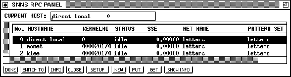

Next: RPC Setup Panel
Up: Control Panels
Previous: Control Panels
This panel is the control center of the communication module. In this
panel the simulator kernel with which the graphical user-interface
will interact is selected. Choose a row and click ,
to specify a simulator kernel to contact. The displays and the control
panel will then be updated.
Figure: The RPC Panel
With this panel the current simulator kernel, shown in the top row, is
chosen.
The buttons and fields of this panel (shown in figure  )
have the following functionality:
)
have the following functionality:
- CURRENT HOST gives the name of the host computer on which
the currently selected kernelrpc program is running.
- The list window displays the list of all currently registered
kernelrpc programs.
-
 switches to the selected simulator kernel.
switches to the selected simulator kernel.
-

displays information about the selected
simulator kernel. No switch of the simulator kernel takes place.
The information displyed includes: Network names or comments which
are saved in the network description.
- closes the selected simulator kernel. Before this
process is completed, the system switches to 'direct local'. This
simulator kernel is special because it is not using the standard
communication protocol. It is impossible to delete this kernel
because it is linked directly to the graphical user-interface. If
the graphical user-interface is started, the standard simulation
kernel is 'direct local'. The only difference between a `direct
local' rpc kernel and the standard SNNS kernel without rpc interface
is the existence of the
 button in the Manager
panel with the added rpc functionality.
button in the Manager
panel with the added rpc functionality.
- opens the Setup panel. In this panel the
current settings of the marked kernel are displayed and can be
modified. These settings are described in section .
- creates the New panel. With this panel it is
possible to start new simulator kernels on different computers or to
link already existing kernels. The New panel is described in
section .
- and
 change the net and the patterns
within the selected kernel.
change the net and the patterns
within the selected kernel.
- selects the information, which is displayed
in the list window.
- closes the rpc panel.
Next: RPC Setup Panel
Up: Control Panels
Previous: Control Panels
Niels.Mache@informatik.uni-stuttgart.de
Tue Nov 28 10:30:44 MET 1995